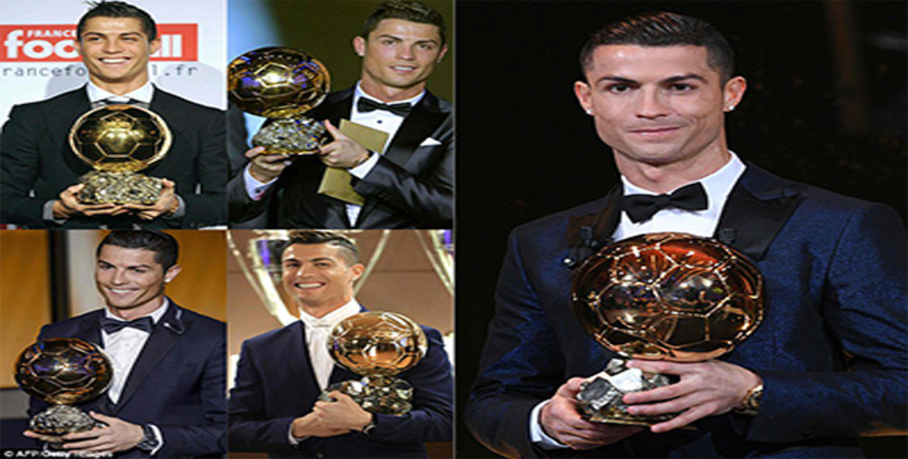

Cristiano's First Ballon d'or
Cristiano Ronaldo was today confirmed as the winner of the 2008 Ballon d'Or, beating competition from Barcelona forward Lionel Messi and Liverpool striker Fernando Torres. The prestigious award was confirmed in Paris this morning by France Football magazine, who present the trophy based on a poll of 96 top journalists.The Manchester United winger came second in last year's poll, behind Brazil star Kaka, but his outstanding form last season, scoring 42 goals in all competitions for United, ensured he took top billing this time. The 23-year-old's coronation was a resounding one, with 77 of the 96 writers voting him as their No1 player of the year in a poll which formerly rewarded Europe's best player, but has been expanded to include players from all over the world.
Each voter names five players on their final ballot, awarding five points to their first choice and one point to their fifth. Ronaldo's was the only name to appear on each of the 96 ballots, polling 446 points out of a maximum 480.
Messi and Torres were rewarded for fine seasons of their own, by earning the silver and bronze positions but were some way short of challenging the heavily-tipped Ronaldo, with respective returns of 267 and 165 points.
Ronaldo scored 42 goals last season to propel United to glory in both the Barclays Premier League and Champions League, adding a further four international goals. His summer efforts at Euro 2008 were overshadowed by a long-running transfer tussle involving Real Madrid but his achievements continue to be recognised.
The 23-year-old is already FIFPro World Player of the Year and also took the top domestic prizes from the Professional Footballers' Association and the Football Writers last season. Ronaldo's latest triumph makes him the first United player to claim the Ballon d'Or since George Best in 1968 and the third Portuguese winner after Eusebio and Luis Figo. It is the first time a Premier League player has scooped the award since Michael Owen won it in 2001 after firing Liverpool to treble-cup success.

Ronaldo succeeded 2007 winner Kaka after convincingly seeing off competition from Barcelona's Lionel Messi and Liverpool striker Fernando Torres.
Of the 96 top journalists polled by France Football, 77 voted the Portugal winger as their leading player this year and every one placed him in their top five after he scored 42 goals to help United win the Premier League and Champions League double.
Ronaldo polled 446 points from a maximum 480, finishing comfortably ahead of second-placed Messi (281) and third-placed Torres (179).
The 23-year-old becomes the third Portuguese player to lift the famous trophy – after Eusebio and Luis Figo – and joins fellow United players George Best, Denis Law and Bobby Charlton in taking the award.
Eleven Premier League players earned votes, with Steven Gerrard (ninth), Wayne Rooney (13th) and Frank Lampard (15th) the highest placed England players.
Ronaldo is just the second England-based player to win the award since Best in 1968. Michael Owen, in 2001, is the other.
"It is one of the most beautiful days of my life. To gain this trophy is something I dreamed of as a child," said Ronaldo.
"Great emotion fills me but I cannot really describe it. I want to thank those who voted for me, those who know me and those who live with me.
"I was not worried, because I was aware of what I did in the course of the season. But to the people who mentioned my name, I say thank you. Thank you also to my team-mates.
"This (trophy) is one that I want to win again because it is so good. Therefore, I will wake and I will say to myself 'I want to be even better.'"
Ronaldo admitted the number of strong candidates this year made his achievement even more special.
"I am only 23 years old and it is splendid, incredible," he continued. "There were other great names this year. I see that Lionel Messi finished second and Fernando Torres third, but also (fifth-placed) Xavi... all these people could have taken the trophy and I won it."
Euro 2008 was the biggest disappointment in Ronaldo's season, where he scored once as Portugal were eliminated in the quarter-finals. However, his performances were hampered by an ankle injury which required surgery immediately after the tournament.